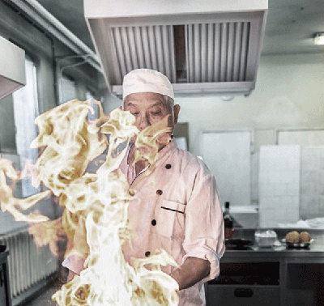
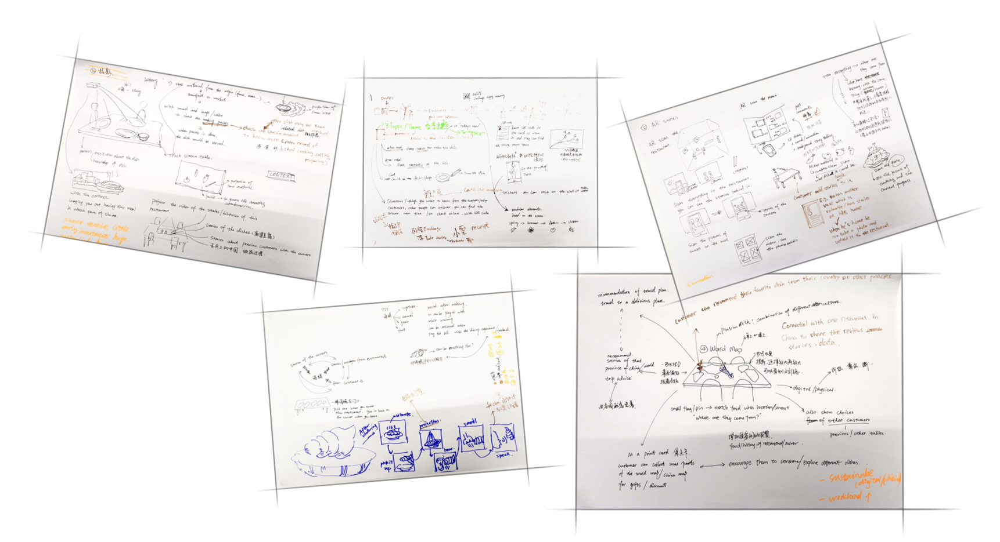
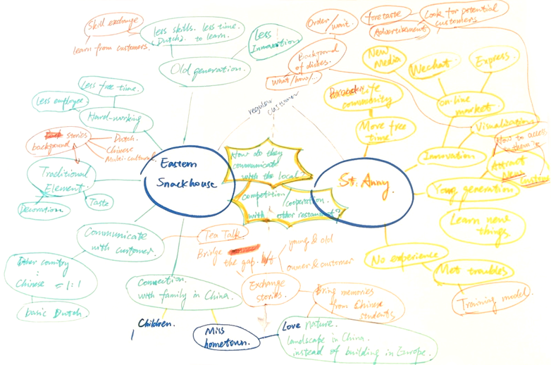
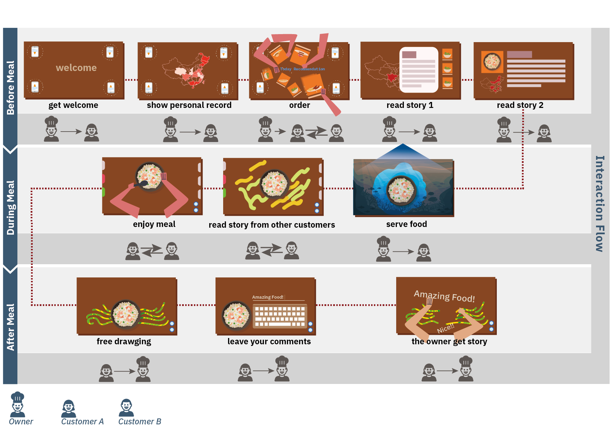
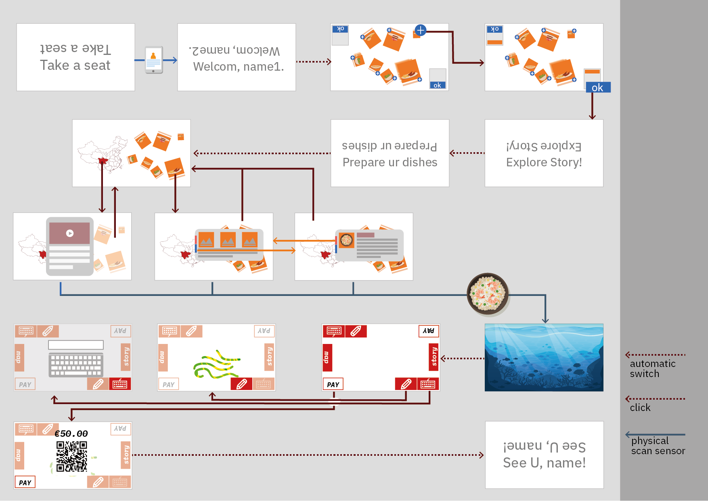

Hi!Story
Augmented reality ordeing system for Chinese restaurants in the Netherlands
Group project, 2019.10
Teammates: Junyao Li, Zimeng He, Sumyeut Leung, Yufei Liu, Yanni Mei Skill:Interaction prototyping
Introduction
Our design aims to bridge the communication gap between owners of small Chinese restaurant and customers in the Netherlands, by creating interactive dining experience with storytelling. From our research and ideation, we tried to integrate culture fusion and social connection in this design.It is based on an interactive projection on dining tables, and a auto-ordering system. More long-term interactions are able to be created among customers, customers-owner, which is not only helping the owners receiving feedbacks, but also aiding customers enjoy better food experiences with their friends.
Demo Showcase
Research
Who are them?

In this project, we aim to design for the owners of Chinese restaurants in the Netherlands. Chinese restaurant in Netherlands has been a fledged culture phenomenon, but What is the life of these owners? How did they adjust their previous lifestyle to get used to new life here? These questions arose our interests and we believe it would be a great opportunity to create potential social impact.
Our insight
"Work is life, life is work."
-Limited social circle
-Inherit the culture and business is a problem
-Imbalanced work-life mode
"Highly depend on customers."
-Have strong connection with neighbor customers
-Make adjustment based on customers’ preference
-Customers are the future of the resturant
"Have less connection with hometown, less innovation capability."
-Have little connection with modern China
-Rapid development of advanced online system is a challenge for elderly
-No energy, motivation or
"Affinity to traditional Chinese culture."
-Keep the core of Chinese culture, food, decoration and festivals
-Inherit the culture and business is a problem
Ideation


Design decision
Journey map

Wireframe

Essential interaction technique

1. Interaction between customers.Floating menus with detailed description from chef’s recommendation. You can move and share dishes with your friends and add dishes to the order.

2. Interaction between customers and food stories. Short videos and photos are offered to introduce the underlying story of the dishes.


3. Interaction between customers and restaurant owners.Customers can share comments, experience or personal stories with regards to the food, after finishing the dishes.